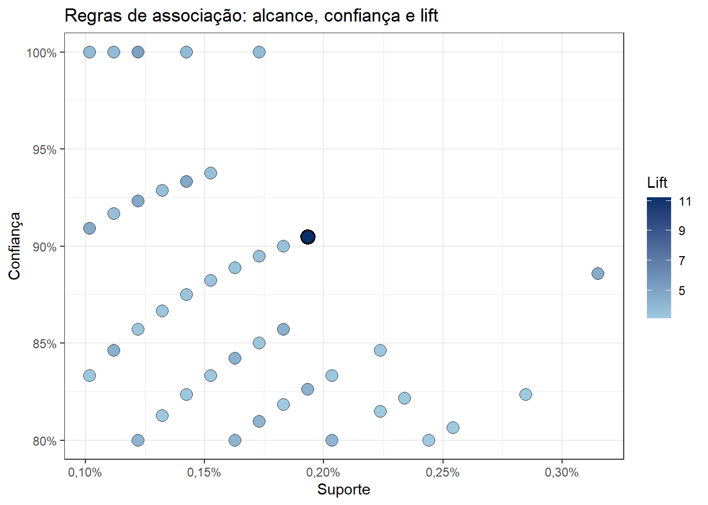

library(arules)
library(dplyr)
library(ggplot2)
data(Groceries)
n_cestas <- length(Groceries)7 Estratégias de Cross-Selling em Mercado
Como os supermercados e e-commerces decidem o layout das gôndolas ou as recomendações de “compre junto”? Imagine que você é o Category Manager de uma rede de supermercados e precisa decidir quais produtos colocar em promoção conjunta. Neste capítulo, usamos o algoritmo Apriori para minerar associações entre produtos e entender o trade-off entre volume (quantas cestas a regra alcança) e especificidade (quão forte é a associação). Em um mar de milhares de regras, como identificar aquelas que têm evidência suficiente e relevância comercial?
Perguntas que o Category Manager quer responder:
- Quais produtos costumam ser comprados juntos?
- Quais combinações merecem uma promoção conjunta, uma exposição lado a lado ou uma recomendação de “compre junto”?
- Quais regras têm evidência suficiente e alcance relevante para justificar uma ação?
Seguimos as etapas do CRISP-DM apresentadas na introdução do livro. Todo o trabalho é feito em R, com o pacote arules (Hahsler, Grün, e Hornik 2005).
| Etapa do CRISP-DM | Onde aparece no capítulo |
|---|---|
| Entendimento do negócio | Esta introdução: as decisões do Category Manager |
| Entendimento dos dados | O cenário e os dados; diagnóstico da operação |
| Preparação dos dados | Os dados já estão no formato transactions; a “preparação” é a escolha dos parâmetros e o filtro de regras redundantes |
| Modelagem | O algoritmo apriori |
| Avaliação | Evidência por trás das regras, confiança versus lift, potencial de cada regra |
| Implantação | Aplicação prática (“Operação Cerveja”) e uso prático das regras |
7.1 Conceitos básicos
Uma regra de associação tem a forma “se \(X\), então \(Y\)”. Seus elementos e suas métricas são:
- Antecedente (\(X\)): o(s) produto(s) que já está(ão) na cesta do cliente.
- Consequente (\(Y\)): o produto que queremos associar ao antecedente (o “próximo passo” da recomendação).
- Suporte: a proporção de cestas que contêm \(X\) e \(Y\) juntos, em relação ao total de cestas. Mede o alcance da regra: é um nicho ou é massa?
- Confiança: entre as cestas que contêm \(X\), a proporção que também contém \(Y\).
- Lift: a razão entre a confiança e a proporção de cestas que contêm \(Y\). Valores acima de 1 indicam que \(X\) e \(Y\) aparecem juntos com mais frequência do que o esperado se fossem independentes.
Em termos de probabilidades:
\[ \text{suporte} = P(X \cap Y), \qquad \text{confiança} = \frac{P(X \cap Y)}{P(X)}, \qquad \text{lift} = \frac{\text{confiança}}{P(Y)}. \]
AvisoAssociação não é causa
O lift mede co-ocorrência nas cestas, e não o efeito de uma oferta. Uma regra com lift alto não garante que oferecer \(Y\) a quem comprou \(X\) aumentará as vendas. Isso só pode ser verificado com um teste (por exemplo, um teste A/B com grupo de controle).
7.2 O cenário e os dados
Vamos analisar o dataset Groceries. Diferente de modelos de regressão, aqui trabalhamos com objetos de classe transactions (matrizes esparsas), otimizados para grandes volumes de itens.
NotaSobre os dados
O conjunto Groceries, do pacote arules, reúne cerca de um mês (30 dias) de transações reais de ponto de venda de um mercado local (Hahsler, Hornik, e Reutterer 2006). Os produtos já vêm agregados em 169 categorias (por exemplo, whole milk e bottled beer), e não há informações de quantidade, preço, margem ou identificação do cliente. Cada transação é uma cesta: não sabemos se o mesmo cliente aparece em várias cestas.
Diagnóstico da Operação
Antes de rodar o algoritmo, precisamos entender o comportamento da base:
summary(Groceries)transactions as itemMatrix in sparse format with
9835 rows (elements/itemsets/transactions) and
169 columns (items) and a density of 0.02609146
most frequent items:
whole milk other vegetables rolls/buns soda
2513 1903 1809 1715
yogurt (Other)
1372 34055
element (itemset/transaction) length distribution:
sizes
1 2 3 4 5 6 7 8 9 10 11 12 13 14 15 16
2159 1643 1299 1005 855 645 545 438 350 246 182 117 78 77 55 46
17 18 19 20 21 22 23 24 26 27 28 29 32
29 14 14 9 11 4 6 1 1 1 1 3 1
Min. 1st Qu. Median Mean 3rd Qu. Max.
1.000 2.000 3.000 4.409 6.000 32.000
includes extended item information - examples:
labels level2 level1
1 frankfurter sausage meat and sausage
2 sausage sausage meat and sausage
3 liver loaf sausage meat and sausageNote que, com 9.835 transações registradas e 169 itens distintos, podemos observar uma densidade de aproximadamente 0.026, indicando que o conjunto de dados é relativamente esparsamente povoado. Além disso, os itens mais frequentemente comprados incluem leite integral, vegetais diversos, pães, refrigerantes e iogurte, com quantidades significativamente maiores em comparação com outros itens. Também, a distribuição do comprimento dos itens mostra que a maioria das transações contém entre 1 e 6 itens, com uma mediana de 3 itens por transação. Isso sugere que os clientes geralmente compram um pequeno número de itens por vez.
DicaO Desafio
Vender leite é fácil (alta frequência). O valor está em descobrir combinações menos óbvias e verificar, com dados de preço e margem (que não temos aqui), se elas compensam a ação.
7.3 O algoritmo apriori
O algoritmo Apriori é um método popular para mineração de regras de associação em conjuntos de dados (Agrawal e Srikant 1994). Ele opera em duas etapas principais: primeiro, identifica todos os conjuntos de itens frequentes, ou seja, aqueles que aparecem com uma frequência maior que um limite pré-definido (suporte mínimo). Em seguida, com base nesses conjuntos frequentes, gera regras de associação, que são implicações do tipo “se \(X\), então \(Y\)”, onde \(X\) e \(Y\) são conjuntos de itens, calculando medidas como confiança e lift para avaliar a força das associações entre os itens.
A confiança de uma regra é a probabilidade condicional de que um item (ou conjunto de itens) \(Y\) seja comprado, dado que o item (ou conjunto de itens) \(X\) também foi comprado. Em outras palavras, é a proporção de transações que contêm tanto \(X\) quanto \(Y\), em relação ao número de transações que contêm \(X\). Uma alta confiança indica que o item \(Y\) é frequentemente comprado quando o item \(X\) é comprado, o que sugere uma associação entre eles. Mas atenção: se \(Y\) for um item muito popular, a confiança será alta mesmo sem relação específica com \(X\).
O lift de uma regra é uma medida de quão mais frequentemente \(X\) e \(Y\) ocorrem juntos do que seria esperado se fossem independentes. Em termos simples, o lift é a razão entre a confiança da regra e a proporção de transações que contêm \(Y\) (o suporte de \(Y\)). Um lift maior que 1 indica que a regra tem uma associação positiva (os itens ocorrem juntos com mais frequência do que o esperado ao acaso), enquanto um lift menor que 1 indica uma associação negativa (os itens ocorrem juntos com menos frequência do que o esperado ao acaso).
Não queremos todas as regras possíveis (seriam milhões). Precisamos filtrar aquelas que têm evidência suficiente e potencial de negócio.
# Gerando regras: queremos combinações que apareçam em pelo menos 0.1% das cestas
# e em que pelo menos 80% das cestas com o antecedente também tenham o consequente (confiança)
rules_todas <- apriori(Groceries, parameter = list(sup = 0.001, conf = 0.8))Apriori
Parameter specification:
confidence minval smax arem aval originalSupport maxtime support minlen
0.8 0.1 1 none FALSE TRUE 5 0.001 1
maxlen target ext
10 rules TRUE
Algorithmic control:
filter tree heap memopt load sort verbose
0.1 TRUE TRUE FALSE TRUE 2 TRUE
Absolute minimum support count: 9
set item appearances ...[0 item(s)] done [0.00s].
set transactions ...[169 item(s), 9835 transaction(s)] done [0.00s].
sorting and recoding items ... [157 item(s)] done [0.00s].
creating transaction tree ... done [0.00s].
checking subsets of size 1 2 3 4 5 6 done [0.01s].
writing ... [410 rule(s)] done [0.00s].
creating S4 object ... done [0.00s].Um suporte mínimo de 0.1% equivale a pelo menos 10 cestas das 9835 da base. O algoritmo encontrou 410 regras.
Muitas dessas regras são redundantes: uma regra é redundante quando existe outra, mais simples (com menos itens no antecedente), com confiança igual ou maior. Mantemos apenas as não redundantes.
rules <- rules_todas[!is.redundant(rules_todas)]Restaram 392 regras. O código abaixo exibe as cinco de maior suporte, ou seja, as que alcançam mais cestas. Ele mostra as associações entre os itens, juntamente com suas medidas de suporte, confiança e lift.
inspect(head(rules, n = 5, by = "support")) lhs rhs support confidence coverage lift count
[1] {citrus fruit,
tropical fruit,
root vegetables,
whole milk} => {other vegetables} 0.003152008 0.8857143 0.003558719 4.577509 31
[2] {other vegetables,
curd,
domestic eggs} => {whole milk} 0.002846975 0.8235294 0.003457041 3.223005 28
[3] {hamburger meat,
curd} => {whole milk} 0.002541942 0.8064516 0.003152008 3.156169 25
[4] {herbs,
rolls/buns} => {whole milk} 0.002440264 0.8000000 0.003050330 3.130919 24
[5] {tropical fruit,
herbs} => {whole milk} 0.002338587 0.8214286 0.002846975 3.214783 23Como ler as regras acima, usando os números do resultado:
- Regra 1,
{citrus fruit, tropical fruit, root vegetables, whole milk} => {other vegetables}: o antecedente aparece em 35 cestas (coverage de 0,36%), e em 31 delas (confiança de 88,6%) havia tambémother vegetables. Como esse item está em cerca de 19% de todas as cestas, o lift de 4,6 indica que a compra conjunta é 4,6 vezes mais frequente do que o esperado ao acaso. É um perfil de cesta de hortifrúti: quem leva várias frutas e raízes costuma levar também outros vegetais. - Regras 2 a 5 têm
whole milkcomo consequente, com confiança entre 80% e 82%. Por exemplo, em{hamburger meat, curd} => {whole milk}, 80,6% das cestas com carne de hambúrguer e coalhada também continham leite integral (25 das 31 cestas com o antecedente). Como o leite está em cerca de 26% de todas as cestas, o lift fica em torno de 3,1 a 3,2. - Alcance: mesmo sendo as cinco regras de maior suporte, nenhuma passa de 0,32% das cestas (no máximo 31 das 9.835). Com confiança mínima de 80%, as regras descrevem combinações muito específicas, e não o comportamento da maioria dos clientes.
O fato de quatro das cinco regras terminarem em leite antecipa um ponto discutido adiante: parte da confiança alta vem da popularidade do próprio leite.
Quanta evidência existe por trás de cada regra?
Um ponto crítico é o número de cestas por trás de cada regra. Com poucas cestas, a confiança e o lift oscilam muito: uma cesta a mais ou a menos pode mudar bastante o resultado.
summary(quality(rules)$count) Min. 1st Qu. Median Mean 3rd Qu. Max.
10.00 10.00 12.00 12.33 13.00 31.00 A mediana é de 12 cestas por regra, e 99.74% das regras se baseiam em menos de 30 cestas. Além disso, ao examinar milhares de combinações possíveis, algumas regras aparecem apenas por acaso. Por isso, regras com poucos casos devem ser vistas como hipóteses a testar, e não como fatos.
7.4 Visualizando o Dilema: Confiança vs. Lift
No negócio, existe um trade-off:
Regras de Alta Confiança: São óbvias (ex: quem compra pão, compra manteiga). O risco de errar é baixo, mas o valor agregado da sugestão também pode ser baixo.
Regras de Alto Lift: São as “minas de ouro”. Elas mostram associações surpreendentes que a intuição humana geralmente não percebe, mas costumam alcançar poucas cestas.
O gráfico abaixo mostra cada regra como um ponto: o suporte (alcance) no eixo x, a confiança no eixo y e o lift na cor.

Observe que todas as regras têm suporte baixo (entre 0,1% e 0,3% das cestas): é o efeito de combinar um suporte mínimo baixo com antecedentes de vários itens. As regras de maior suporte (à direita) têm lift moderado, em torno de 3 a 5, enquanto a de lift mais alto (≈ 11) alcança menos cestas do que elas. Em nenhum ponto do gráfico há uma regra que una alto alcance e alto lift, e esse é o dilema do negócio.
Top 5: As Regras “Certeiras” (Alta Confiança)
No código abaixo, extraímos as cinco regras de maior confiança. Como várias regras empatam em 100% de confiança, a escolha entre elas é arbitrária. Uma confiança de 100% significa que, em todas as cestas da base que continham os itens à esquerda, os itens à direita também estavam presentes. Atenção à coluna count: ela mostra em quantas cestas cada regra se baseia.
inspect(head(rules, n = 5, by = "confidence")) lhs rhs support confidence coverage lift count
[1] {rice,
sugar} => {whole milk} 0.001220132 1 0.001220132 3.913649 12
[2] {canned fish,
hygiene articles} => {whole milk} 0.001118454 1 0.001118454 3.913649 11
[3] {root vegetables,
butter,
rice} => {whole milk} 0.001016777 1 0.001016777 3.913649 10
[4] {root vegetables,
whipped/sour cream,
flour} => {whole milk} 0.001728521 1 0.001728521 3.913649 17
[5] {butter,
soft cheese,
domestic eggs} => {whole milk} 0.001016777 1 0.001016777 3.913649 10Nas cinco regras, a confiança é de 100% e o consequente é sempre whole milk, mas cada uma se baseia em poucas cestas: entre 10 e 17, perto do mínimo de 10 imposto pelo suporte de 0,1%. Note também que o lift é idêntico nas cinco (3,91). Esse é o valor máximo possível para uma regra com leite no consequente (1 dividido pela proporção de cestas com leite), atingido sempre que a confiança é 100%. Assim, o lift aqui apenas repete a confiança de 100% comparada com a popularidade do leite, e não permite distinguir uma regra da outra.
DicaImpactos práticos
O whole milk é o consequente de 61% das regras encontradas. Isso acontece porque ele está presente em cerca de 26% de todas as cestas: a confiança alta reflete, em parte, a popularidade do próprio leite.
Faz sentido gastar verba de marketing recomendando leite para quem está comprando arroz e açúcar? Provavelmente não. Em uma regra com 100% de confiança, todas as cestas com o antecedente já tinham leite, então não há nenhuma cesta a que a recomendação pudesse acrescentar o produto.
Top 5: As Regras de “Impulso” (Alto Lift)
Agora, vamos extrair as cinco regras de maior lift. Ele nos diz quantas vezes mais frequente é a compra conjunta de \(X\) e \(Y\) do que se eles fossem comprados independentemente.
top_lift <- head(rules, n = 5, by = "lift")
inspect(top_lift) lhs rhs support confidence coverage lift count
[1] {liquor,
red/blush wine} => {bottled beer} 0.001931876 0.9047619 0.002135231 11.235269 19
[2] {citrus fruit,
other vegetables,
soda,
fruit/vegetable juice} => {root vegetables} 0.001016777 0.9090909 0.001118454 8.340400 10
[3] {tropical fruit,
other vegetables,
whole milk,
yogurt,
oil} => {root vegetables} 0.001016777 0.9090909 0.001118454 8.340400 10
[4] {citrus fruit,
grapes,
fruit/vegetable juice} => {tropical fruit} 0.001118454 0.8461538 0.001321810 8.063879 11
[5] {other vegetables,
whole milk,
yogurt,
rice} => {root vegetables} 0.001321810 0.8666667 0.001525165 7.951182 13Aqui o cenário muda. O lift das cinco regras varia de 7,95 a 11,24, indicando associações fortes e pouco óbvias para quem olha apenas o volume de vendas isolado.
A regra de maior lift é {liquor,red/blush wine} => {bottled beer}, com lift de 11,24. A segunda é {citrus fruit,other vegetables,soda,fruit/vegetable juice} => {root vegetables}, com lift de 8,34, ou seja, a compra conjunta dos itens à esquerda com o item à direita é 8,3 vezes mais frequente do que seria se fossem independentes.
Mas esse lift alto precisa ser lido com cuidado:
- Pouca evidência: as cinco regras se baseiam em apenas 10 a 19 cestas (o mínimo permitido pelo suporte de 0,1% é 10). Com tão poucos casos, o lift e a confiança oscilam muito.
- Alcance pequeno: o antecedente mais frequente aparece em apenas 0,21% das cestas.
- Antecedentes longos: quatro das cinco regras exigem três ou mais itens na mesma cesta, o que as torna pouco acionáveis. Três delas têm
root vegetablescomo consequente.
Os lifts são altos, em parte, porque o consequente não é um item muito popular: quanto mais raro o consequente, mais alto o lift máximo possível. A seção a seguir mede quanto cada uma dessas regras pode realmente render.
Do lift ao potencial
Um lift alto diz que a associação é forte, mas não diz quanto ela vale. Para isso, olhamos o alcance: em quantas cestas a regra se aplica e quantas delas ainda “faltam” o item do consequente (a verdadeira margem de oportunidade).
potencial <- tibble(
regra = labels(top_lift),
`cestas com X` = round(quality(top_lift)$coverage * n_cestas),
`cestas com X e Y` = round(quality(top_lift)$count),
`cestas com X sem Y` = `cestas com X` - `cestas com X e Y`,
`% do total de cestas com X` = round(100 * quality(top_lift)$coverage, 2)
)| regra | cestas com X | cestas com X e Y | cestas com X sem Y | % do total de cestas com X |
|---|---|---|---|---|
| {liquor,red/blush wine} => {bottled beer} | 21 | 19 | 2 | 0.21 |
| {citrus fruit,other vegetables,soda,fruit/vegetable juice} => {root vegetables} | 11 | 10 | 1 | 0.11 |
| {tropical fruit,other vegetables,whole milk,yogurt,oil} => {root vegetables} | 11 | 10 | 1 | 0.11 |
| {citrus fruit,grapes,fruit/vegetable juice} => {tropical fruit} | 13 | 11 | 2 | 0.13 |
| {other vegetables,whole milk,yogurt,rice} => {root vegetables} | 15 | 13 | 2 | 0.15 |
Mesmo entre as regras de maior lift, o antecedente aparece, no máximo, em 0,21% das cestas. O potencial de venda adicional (as cestas com \(X\) que ainda não levam \(Y\)) é, portanto, pequeno em termos absolutos. Isso também vale para regras de confiança de 100%: nelas, não há nenhuma cesta com \(X\) sem \(Y\), e portanto nada a ganhar com a recomendação.
7.5 Aplicação Prática: “Operação Cerveja”
Imagine que o estoque de bottled beer está alto. Onde devemos atuar?
# Filtrando regras onde a cerveja é o alvo
regras_cerveja <- subset(rules, subset = rhs %in% "bottled beer")
inspect(sort(regras_cerveja, by = "lift")) lhs rhs support confidence
[1] {liquor, red/blush wine} => {bottled beer} 0.001931876 0.9047619
coverage lift count
[1] 0.002135231 11.23527 19 A regra de maior lift é {liquor,red/blush wine} => {bottled beer}, com lift de 11,24 e confiança de 90,5%. Em números absolutos: das 21 cestas que contêm o antecedente, 19 também continham cerveja de garrafa.
Antes de transformar isso em ação, é preciso ler a regra com cuidado:
- É um comportamento dentro da mesma compra. A regra mostra que cerveja de garrafa costuma estar na mesma cesta que esses itens (um comportamento de “abastecimento de adega”). Ela não diz que o cliente voltará para comprar cerveja depois.
- A evidência é pequena. A confiança de 90,5% vem de 19 em 21 cestas. Pouquíssimas cestas sustentam o resultado.
- O alcance é pequeno. O antecedente aparece em apenas 0,21% das cestas.
- A maioria já compra a cerveja. Dar desconto em cerveja para quem já a leva com probabilidade tão alta seria subsidiar uma compra que aconteceria de qualquer forma, o mesmo problema que apontamos para o leite. Restam apenas 2 cestas com o antecedente sem cerveja.
Portanto, em vez de dar desconto, as ações mais coerentes com essa regra são de exposição: posicionar a cerveja de garrafa próxima à seção de vinhos e licores, ou montar um kit de “adega” com a combinação. Em qualquer caso, a ação deve ser tratada como hipótese e testada. O conjunto de dados não distingue tipos de cerveja de garrafa (por exemplo, artesanais), então qualquer ação específica para um tipo exigiria dados mais detalhados.
Com menos confiança, mais alcance
Para encontrar regras com mais alcance, podemos aceitar uma confiança menor e um suporte maior, restringindo o consequente à cerveja de garrafa:
regras_cerveja_amplas <- apriori(
Groceries,
parameter = list(sup = 0.003, conf = 0.2, minlen = 2),
appearance = list(rhs = "bottled beer", default = "lhs")
)Apriori
Parameter specification:
confidence minval smax arem aval originalSupport maxtime support minlen
0.2 0.1 1 none FALSE TRUE 5 0.003 2
maxlen target ext
10 rules TRUE
Algorithmic control:
filter tree heap memopt load sort verbose
0.1 TRUE TRUE FALSE TRUE 2 TRUE
Absolute minimum support count: 29
set item appearances ...[1 item(s)] done [0.00s].
set transactions ...[169 item(s), 9835 transaction(s)] done [0.00s].
sorting and recoding items ... [136 item(s)] done [0.00s].
creating transaction tree ... done [0.00s].
checking subsets of size 1 2 3 4 5 done [0.01s].
writing ... [2 rule(s)] done [0.00s].
creating S4 object ... done [0.00s].inspect(head(regras_cerveja_amplas, n = 5, by = "lift")) lhs rhs support confidence coverage
[1] {liquor} => {bottled beer} 0.004677173 0.4220183 0.01108287
[2] {red/blush wine} => {bottled beer} 0.004880529 0.2539683 0.01921708
lift count
[1] 5.240594 46
[2] 3.153760 48 Reduzindo o suporte mínimo para 0,3% (30 cestas), o algoritmo encontrou 2 regras, ambas com um único item no antecedente: {liquor} e {red/blush wine}. Elas não apareciam com o suporte de 0,5% porque se baseiam em 46 e 48 cestas, logo abaixo do mínimo de 49 daquele corte.
Comparadas à regra anterior, {liquor, red/blush wine} => {bottled beer}, elas trocam confiança por alcance e por evidência:
- Alcance: o antecedente aparece em 1,1% (licor) e 1,9% (vinho tinto) das cestas, contra 0,21% da regra anterior. É de 5 a 9 vezes mais cestas.
- Confiança e lift menores, mas mais evidência: a confiança é de 42% e 25%, e o lift de 5,2 e 3,2, contra 90,5% e 11,2 da regra anterior. Em compensação, elas se apoiam em 46 e 48 cestas, mais que o dobro das 19 daquela regra.
- Oportunidade real: há 63 cestas com licor e 141 com vinho tinto que não levaram cerveja de garrafa. Na regra anterior, eram apenas 2. Com 90% de confiança quase todos já levavam a cerveja, e uma promoção apenas subsidiaria uma compra que aconteceria de qualquer forma.
Isso muda a leitura comercial: as regras de confiança mais baixa são, aqui, mais úteis do que a de 90%. Uma ação coerente é oferecer a cerveja (por exemplo, com um cupom no caixa) apenas a quem comprou licor ou vinho tinto e ainda não a levou, evitando dar desconto a quem já a compraria. Mas o potencial é limitado: são, no máximo, cerca de 204 cestas, ou 2,1% das cestas do mês (os dois grupos podem se sobrepor), e nem todas aceitariam a oferta. Como nas demais regras, trata-se de uma hipótese a ser testada com um grupo de controle.
7.6 Uso prático das regras
7.7 Uso prático das regras
A última etapa do CRISP-DM é a implantação. Algumas formas de transformar as regras em ação:
- Exposição e layout: usar regras de antecedente curto (1 ou 2 itens) para posicionar produtos próximos ou montar kits.
- Recomendações a partir da cesta: exibir “compre junto” a partir dos itens que o cliente já escolheu. O código abaixo mostra uma função simples que, dada uma cesta, devolve as regras aplicáveis cujo consequente ainda não está na cesta.
- Aplicações no e-commerce: no ambiente online, a mesma lógica pode ser usada em vários pontos da jornada: na página do produto (“quem comprou este item também comprou”), no carrinho (sugerir um complemento antes do pagamento), em e-mails pós-compra e em kits com preço combinado. Diferentemente da loja física, o site conhece a cesta em tempo real e pode medir o efeito de cada sugestão (cliques, conversão, ticket médio) com testes A/B. Em contrapartida, é preciso evitar sugestões óbvias (como o leite), itens sem estoque e itens de baixa margem.
- Testar antes de ampliar: cada ação deve ser testada com um grupo de controle, para medir o aumento real das vendas e da margem.
- Atualizar periodicamente: os dados cobrem apenas um mês. Em um uso real, as regras devem ser recalculadas com dados mais recentes e de períodos diferentes, para considerar a sazonalidade.
recomendar <- function(itens, regras, n = 3) {
# regras cujo antecedente está contido na cesta
lhs_ok <- sapply(as(lhs(regras), "list"), function(x) all(x %in% itens))
candidatas <- regras[lhs_ok]
# descarta regras cujo consequente já está na cesta
rhs_novo <- !sapply(as(rhs(candidatas), "list"), function(x) any(x %in% itens))
head(sort(candidatas[rhs_novo], by = "lift"), n)
}
inspect(recomendar(c("liquor", "red/blush wine"), rules)) lhs rhs support confidence
[1] {liquor, red/blush wine} => {bottled beer} 0.001931876 0.9047619
coverage lift count
[1] 0.002135231 11.23527 19 A função recomendar() recebe a cesta atual do cliente (itens), o conjunto de regras (regras) e o número de sugestões desejado (n), e segue três passos:
- Seleciona as regras aplicáveis: aquelas cujo antecedente está inteiro dentro da cesta. A expressão
as(lhs(regras), "list")transforma o antecedente de cada regra em um vetor de itens, eall(x %in% itens)verifica se todos eles estão na cesta. - Descarta as regras cujo consequente já está na cesta, pois recomendar o que o cliente já escolheu não acrescenta nada.
- Ordena pelo lift e devolve as
nmelhores. O critério poderia ser outro, como a confiança ou, se tivéssemos dados de preço e margem, o ganho esperado.
No exemplo, a cesta contém liquor e red/blush wine, que formam o antecedente da regra da cerveja de garrafa, então ela deve ser a sugerida. Se nenhuma regra se aplicar à cesta, a função devolve um resultado vazio, e o sistema precisa de uma alternativa (por exemplo, os produtos mais vendidos).
Com as regras que geramos (suporte mínimo de 0,1% e confiança mínima de 80%), a função terá poucas oportunidades de agir. O cálculo abaixo mostra em que proporção das cestas da base ela devolve ao menos uma sugestão:
cestas_lista <- as(Groceries, "list")
tem_recomendacao <- sapply(cestas_lista, function(cesta) {
length(recomendar(cesta, rules, n = 1)) > 0
})Em apenas 4,4% das cestas há alguma regra aplicável com consequente ainda ausente. Isso ocorre porque as regras têm antecedentes longos e alta confiança (o que deixa pouco “espaço” para recomendar). Em um sistema real de recomendação, é comum usar parâmetros menos restritivos (suporte e confiança menores) e limitar o tamanho do antecedente, trocando precisão por cobertura.
7.8 Conclusão
Neste capítulo, usamos o algoritmo apriori sobre 9835 cestas de um mercado para entender quais produtos costumam ser comprados juntos e transformar essas associações em ações de cross-selling. Alguns aprendizados importantes:
- Confiança alta pode refletir apenas a popularidade do consequente, como no caso do leite.
- Lift alto costuma vir com suporte baixo: as associações mais surpreendentes alcançam poucas cestas.
- O número de cestas por trás de cada regra determina o quanto podemos confiar nela. Regras com poucos casos são hipóteses.
- Uma regra descreve co-compra, e não o efeito de uma ação. Só um teste com grupo de controle mostra se uma oferta realmente aumenta as vendas.
A análise nos permite compreender melhor o comportamento do consumidor. Entretanto, pode servir também para provocar novos comportamentos nos clientes. Como orientação geral (hipóteses a validar):
Suporte Baixo + Lift Alto: possíveis nichos de oportunidade, a validar quanto ao alcance, à margem e ao efeito da ação.
Suporte Alto + Confiança Alta: itens “âncora”, que não precisam de promoção para vender. Uma prática comum no varejo é posicioná-los longe da entrada, para que o cliente percorra outros corredores. Essa é uma hipótese de layout a ser testada, e não um resultado desta análise.
Limitações:
- Os dados cobrem cerca de um mês de um único mercado e as categorias de produto são agregadas.
- Não há preço, margem ou identificação do cliente, então não é possível medir o retorno financeiro nem o comportamento ao longo do tempo.
- Os resultados dependem dos parâmetros escolhidos (suporte e confiança mínimos).
- Com muitas combinações possíveis, algumas regras aparecem por acaso, sobretudo as que têm poucas cestas.
- As regras são descritivas e não causais.
Próximos passos: usar os níveis de hierarquia dos produtos (o Groceries traz categorias mais agregadas, como level1 e level2, que podem ser exploradas com aggregate()), incorporar dados de preço e margem para ordenar as regras pelo ganho esperado e testar as ações em campo.